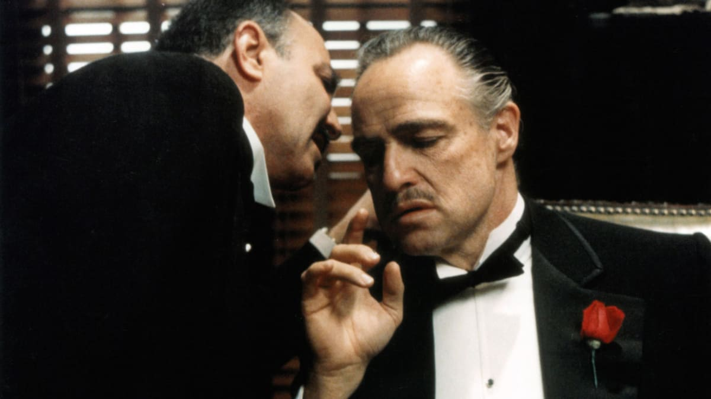

The Godfather — rejissor Francis Ford Coppola'nın qanqster dram filmi, Mario Puzo'nun 1969-cu ildə işıq üzü görmüş eyniadlı romanının ekranlaşması. Filmin şüarı: "İmtina edilməsi mümkün olmayan təklif" olmuşdu. Amerika Film İnstitutunun qərarına əsasən ən yaxşı qanqster filmi və kinematoqrafiya tarixinin ən yaxşı filmlərindən biri hesab olunur. IMDb-nin 250 ən yaxşı film siyahısına daxil olmuşdur.

Bəzi maraqlı faktlar
Marlon Brando ona verilmiş "Oskar" mükafatını qəbul etməmişdi. Təqdimat mərasimində onun əvəzinə səhnəyə çıxan hindu nümayəndə qadın Saşin Littlfezerin izahından sonra aktyorun bu heykəlcikdən imtina etməsi məlum oldu. Aktyorun bu addımı atmaqda məqsədi Amerikanın əsl yerli əhalisinin hüquqlarının tapdalanmasına etirazını bildirmək idi
Mario Puzonun sözlərinə görə, Conni Fonteyn personajı Frenk Sinatranın həyatından götürülmüş faktlar əsasında yaradılmayıb
Vito Korleone roluna çəkilməyə Frenk Sinatra da namizədlərdən biri idi
Al Paçino Maykl obrazının öz yaradıcılığında ən mürəkkəb rol olduğunu demişdir
Çəkiliş zamanı qrim üçün Brandonun çənəsinə xüsusi ağac materialı bərkidilmişdi. Məqsəd onun çənəsini buldoq çənəsinə bənzətmək idi
Bəzi ehtimallara görə müəllif Vito Korleone obrazını Karlo Qambinonun prototipi kimi yaratmışdı
Luka Brazi rolunu ifa edən aktyor Lenni Montana Marlon Brandonun görünüşü qarşısında elə həyəcan keçirirdi ki, tez-tez söyləyəcəyi mətni çaşırdı. Baş vermiş bu cür təbii əsəbilik Koppolanı qane edir və o, həmin səhnələri birbaşa filmə daxil edir
Filmdə göstərilən portağallar ölümə işarə kimi təqdim olunur. Belə ki, onların kadrda görünməsindən bir müddət sonra mütləq hansısa qəhrəman ölür. Yeganə istisna Vito Korleone hesab olunur. Çünki ona edilən sui-qəsd zamanı xaç atası ölümcül yaralanır